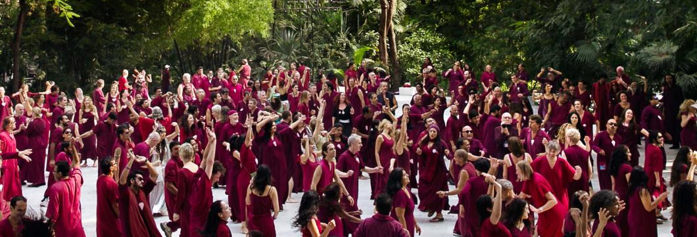

For information about visiting the OSHO International Meditation Resort or anything else, contact Gyan at info@osho.nz. For more information about Osho, you can also go to www.osho.com. This website operates with permission from the OSHO International Foundation.
Over summer we'll be hosting meditations every Friday. OSHO meditations are active and radically different to your usual silent sitting meditations, they have been designed specifically for the modern man.
"Modern man is a very new phenomenon. No traditional method can be used exactly as it exists because modern man never existed before. So, in a way, all traditional methods have become irrelevant.
For example, the body has changed so much. It is so drugged that no traditional method can be helpful. The whole atmosphere is artificial now: the air, the water, society, living conditions. Nothing is natural. You are born in artificiality; you develop in it. So traditional methods will prove harmful today. They will have to be changed according to the modern situation." - Osho
Coming up this month:
Yoga mats and cushions are provided.
Cost $5Head over to the OSHO tent at the Prana Festival this New Years for a range of OSHO meditations :) Meditations at the festival include:
Our dear friend Abheer hosts Sufi Whirling every two weeks in the same room where we have our Friday meditations.
"Whirling is one of the most ancient techniques, one of the most forceful. It is so deep that even a single experience can make you totally different. Whirl with open eyes, just like small children go on twirling, as if your inner being has become a center and your whole body has become a wheel, moving, a potter's wheel, moving. You are in the center, but the whole body is moving." - OshoCost $5
Sandesh has kindly offered to provide all of her books as an OSHO library. Books can be borrowed free of charge (although there is a deposit) for up to 4 weeks at a time. The books they have are listed below. If you'd like to borrow some you can contact Sandesh at 09 846 3634 or sandesh.heinicke@gmail.com.
If you'd like to buy OSHO books, videos and CD's you can visit www.oshobooks.com.au or www.osho.com/shop.